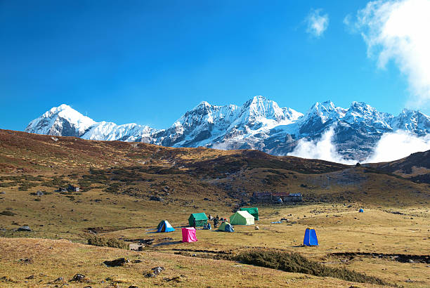
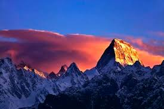
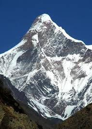
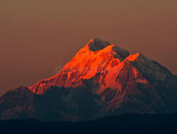

HIGHEST HILLS MOUNTAINS
The dividing line between a mountain with multiple peaks and separate mountains is not always clear (see also Highest unclimbed mountain). A popular and intuitive way to distinguish mountains from subsidiary peaks is by their height above the highest saddle connecting it to a higher summit, a measure called topographic prominence or re-ascent (the higher summit is called the "parent peak"). A common definition of a mountain is a summit with 300 m (984 ft) prominence. Alternatively, a relative prominence (prominence/height) is used (usually 7–8%) to reflect that in higher mountain ranges everything is on a larger scale. The table below lists the highest 100 summits with at least 500 m (1,640 ft) prominence, approximating a 7% relative prominence. A drawback of a prominence-based list is that it may exclude well-known or spectacular mountains that are connected via a high ridge to a taller summit, such as Eiger, Nuptse or Annapurna IV. A few such peaks and mountains with nearly sufficient prominence are included in this list, and given a rank of "S".
It is very unlikely that all given heights are correct to the nearest metre; indeed, the sea level is often problematic to define when a mountain is remote from the sea. Different sources often differ by many metres, and the heights given below may well differ from those elsewhere in this encyclopedia. As an extreme example, Ulugh Muztagh on the north Tibetan Plateau is often listed as 7,723 m (25,338 ft) to 7,754 m (25,440 ft), but appears to be only 6,973 m (22,877 ft) to 6,987 m (22,923 ft). Some mountains differ by more than 100 m (330 ft) on different maps, while even very thorough current measurements of Mount Everest range from 8,840 m (29,003 ft) to 8,849 m (29,032 ft). These discrepancies serve to emphasize the uncertainties in the listed heights.
Though some parts of the world, especially the most mountainous parts, have never been thoroughly mapped, it is unlikely that any mountains this high have been overlooked, because synthetic aperture radar can and has been used to measure elevations of most otherwise inaccessible places. Still, heights or prominences may be revised, so that the order of the list may change and even new mountains could enter the list over time. To be safe, the list has been extended to include all 7,200 m (23,622 ft) peaks.
The highest mountains above sea level are generally not the highest mountains above the surrounding terrain, also called the highest free-standing mountains. There is no precise definition of surrounding base, but Denali,[2] Mount Kilimanjaro[3] and Nanga Parbat[4] are possible candidates for the tallest mountain on land by this measure.
The bases of mountain islands are below sea level, and given this consideration Mauna Kea (4,207 m (13,802 ft) above sea level) is the world's tallest mountain and volcano, rising about 10,203 m (33,474 ft) from the Pacific Ocean floor. Mount Lamlam on Guam is periodically claimed to be among the world's highest mountains because it is adjacent to the Mariana Trench; the most extreme claim is that, measured from Challenger Deep 313 kilometres (194 mi) away, Mount Lamlam is 11,530 metres (37,820 ft) tall.[5][6] Ojos del Salado has the greatest rise on Earth: 13,420 m (44,029 ft) vertically to the summit[citation needed] from the bottom of the Atacama Trench, which is about 560 km (350 mi) away, although most of this rise is not part of the mountain.
Highest Mountains in India
India is home to some of the world's highest and most challenging mountains, primarily located in the Himalayan range. This table showcases the top peaks that attract mountaineers and trekkers from around the globe.
| Mountain Name |
Height (meters) |
Range |
Parent Mountain |
Image |
| Kangchenjunga |
8,586 m |
Himalayas |
Mount Everest |
 |
| Nanda Devi |
7,816 m |
Garhwal Himalaya |
Kangchenjunga |
 |
| Kamet |
7,756 m |
Garhwal Himalaya |
Nanda Devi |
 |
| Saltoro Kangri |
7,742 m |
Saltoro Mountains |
Gasherbrum I |
 |
| Saser Kangri |
7,672 m |
Saser Muztagh |
Saltoro Kangri |
 |
| Mamostong Kangri |
7,516 m |
Rimo Muztagh |
Saser Kangri |
 |
| Rimo I |
7,385 m |
Rimo Muztagh |
Mamostong Kangri |
 |
| Hardeol |
7,151 m |
Kinnaur Himalaya |
Trisul |
 |
| Chaukhamba I |
7,138 m |
Garhwal Himalaya |
Kamet |
 |
| Trishul |
7,120 m |
Kumaon Himalaya |
Nanda Devi |
 |